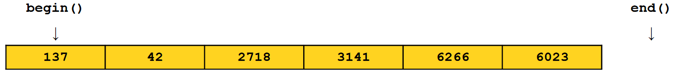
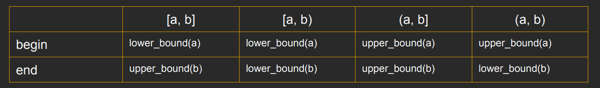
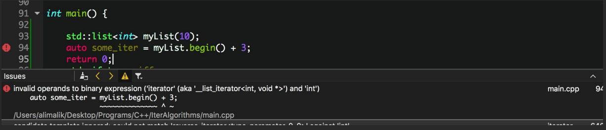
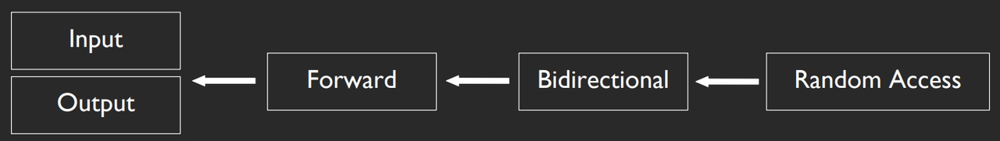
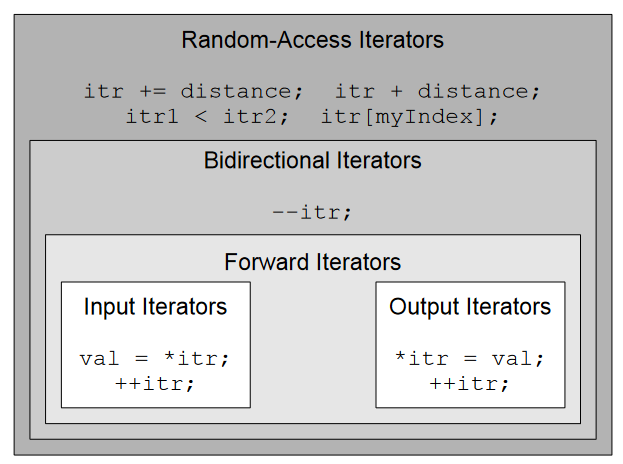
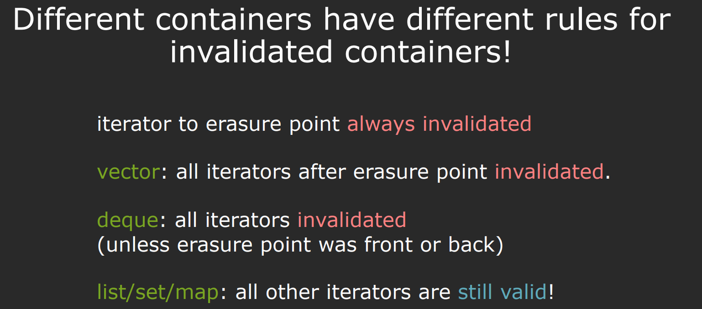
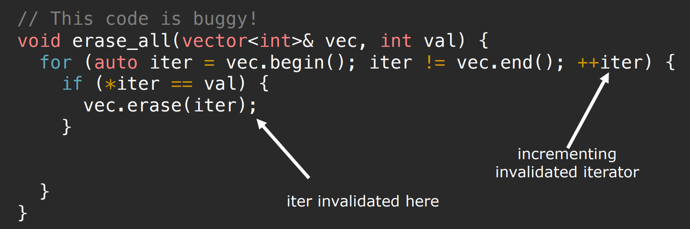
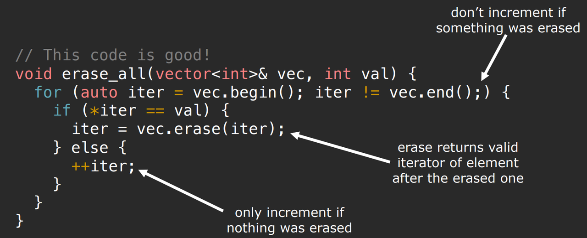
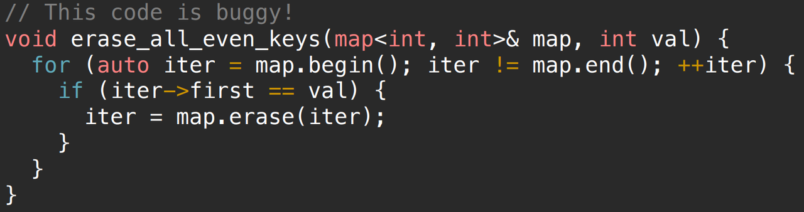
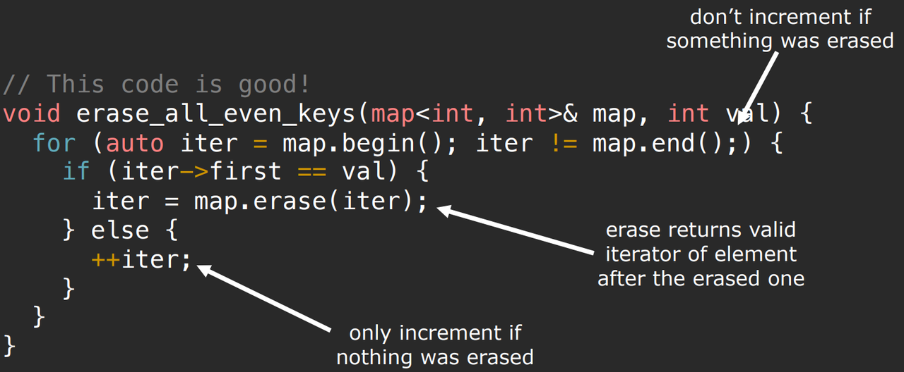

3.STL Associative Containers and Iterators
Associative Containers
- 没有顺序的概念
- 使用key而非index访问数据。
- 包括以下四种：
std::map<T1,T2>std::set<T>std::unordered_map<T1,T2>std::unordered_set<T>
其中，std::map<T1,T2>和std::set<T>的key需要能够使用<来比较大小。
std::unordered_map<T1,T2>和std::unordered_set<T>则基于哈希，需要定义key的哈希函数。
map
map支持的几种操作：
- 插入k-v对
- 删除k-v对
- 检查一个特定的
key是否存在 - 给定key，查询对应的value
插入k-v对
- 使用方括号向map中插入k-v对：
1 | |
- 使用
insert插入k-v对
1 | |
使用insert和[]的区别：
如果尝试使用insert函数将k-v对插入到map中，而该key已经存在，则map将不会插入k-v对，也不会更新与现有key关联的value。
1 | |
map的insert函数返回一个类型为
<iterator, bool>的pair值。pair中的bool值表示插入操作是否成功。结果为true表示k-v对已添加，结果为false表示key已经存在。
pair中迭代器指向映射中的k-v对。如果k-v对是新添加的，则该迭代器指向新插入的k-v对；如果k-v对已经存在，则迭代器指向阻止操作的现有k-v对。
因此，可以这样使用
insert插入k-v对：
2
3
4
5/* Try to insert normally. */
pair<map<string, int>::iterator, bool> result = myMap.insert(make_pair("STL", 137));
/* If insertion failed, manually set the value. */
if (!result.second)
result.first->second = 137;
删除k-v对
1 | |
检查特定的key是否存在
- 使用
count成员函数
1 | |
- 使用
std::find()
1 | |
count实际上只是对find函数的调用。所以find稍微快一点。
给定key，查询对应的value
- 使用
[]
1 | |
- 使用
.at成员函数
1 | |
两者的区别：
若给定的
key不存在，[]则会隐式的创建k-v对，以给定key为键，值为默认值。若给定的
key不存在，使用.at查询时则会报错。例子：
2
3
4
5std::map<int, std::string> myMap;
myMap[1] = "One";
cout << myMap.at(1) << endl; // 输出： "one"
cout << myMap.at(2) << endl; // 抛出 std::out_of_range 异常
cout << myMap[2] << endl; // 输出空字符串
Set
- set是没有value的map的一种特殊情况。
- 对应的value为true（若key存在），为false（若key不存在）。
举例：
1 | |
Iterator
每个容器以不同的格式存储其数据，迭代器为访问存储在容器中的数据提供了一种干净、一致的机制，而不管这些数据是如何存储的。
Every STL container class exports a member function begin() which yields an iterator pointing to the first element of that container.
Each STL container exports a special function called end() that returns an iterator to the element one past the end of the container.

使用迭代器遍历容器：
1 | |
迭代器的美妙之处在于它们可以在任何STL容器上工作，包括set。
1 | |
迭代器的用法不止有遍历元素。例如：
排序：
1 | |
搜索：
1 | |
确定范围：
单个迭代器指向容器类中的单个位置，并表示间接读取或写入该值的方法。
一对迭代器定义了两个位置，从而定义了一个元素范围。
set中提供了两个成员函数：
lower_bound：接受一个值，然后返回一个迭代器，指向集合中第一个大于或等于该值的元素。upper_bound：接受一个值，返回一个迭代器，指向集合中第一个严格大于该值的元素。
1 | |

range based for loop的本质就是使用迭代器访问的简写：
1 | |
Map Iterators
- map的迭代器略有不同，因为map同时拥有key和value。
- 如果解引用一个
map<KeyType, ValueType>的迭代器，会得到一个类型为pair<const KeyType, ValueType>的pair
先看看pair：
1 | |
map迭代器的使用举例：
1 | |
Iterator Types
一些看似很合理的使用迭代器的方法：
1 | |
但如果对std::list（双向链表）执行上述操作就会报错：

这是由迭代器的类型导致的。
迭代器有5种类型：

所有类型的迭代器都有一些共同的特征:
- 可以从已有的迭代器中创建
- 可以使用++
- 可以使用==和!=比较
其余特征则取决于迭代器的类型：

Input Iterators
只读，即只能在表达式的右侧解引用。
1 | |
Output Iterators
只能写，即只能在表达式的左侧解引用。
1 | |
Forward Iterators
可以读写以及++
1 | |
Bidirectional Iterators
与Forward Iterators相同且可以--
1 | |
Random Access Iterators
和Bidirectional Iterators相同且可以使用+和-任意递增或递减
1 | |
invalidated iterators

例1：

修改后：

例2：

修改：

Multicontainers
multimap：一个key可以有多个不同的value。
multiset：可以包含多个key。
与普通版本的区别：
count函数将返回容器中元素的实际数量，而不仅仅是二进制0或1。find函数仍然会返回迭代器，但它所指向的元素不能保证是该元素在容器中的唯一副本。erase将擦除指定键或元素的所有副本。- 在
multimap中不存在方括号，需要使用insert函数插入k-v对 equal_range，返回一对<iterator, iterator>对象，表示容器中等于指定值的成员的范围，例如：
1 | |
多容器在实践中相当少见，部分原因是它们可以很容易地使用其他方法来模拟。
例如，multimap<string, int>的行为类似于map<string, vector<int> >，因为两者都是将字符串映射到一定数量的int。